| [ Team LiB ] |
|
M8.5 For Further Study: Detailed ModelA more detailed model of a CSTR includes the effect of cooling jacket dynamics. The three modeling equations are 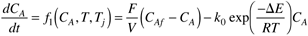 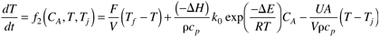 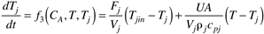 where Fj is the flow rate through the jacket, and Tjin is the jacket inlet temperature. The variable definition should be clear from Figure M8-5. Notice that the manipulated input is the jacket make-up flow rate (Fjf), which does not appear in the above modeling equations. Figure M8-5. CSTR with recirculating jacket. Definition of variables.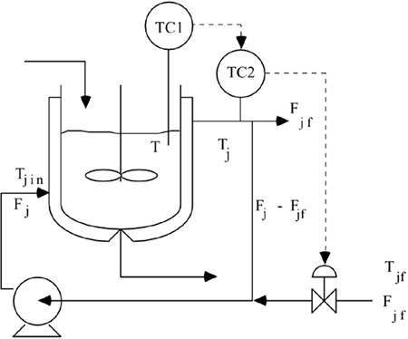 A static energy balance can be used to find the jacket inlet temperature as a function of the jacket make-up flow rate (Fjf) 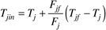 When (M8.11d) is substituted into (M8.11c), the following equations result 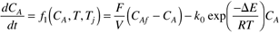 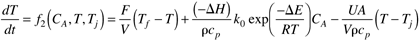 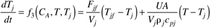 which is the same set of equations that would be derived from a reactor with a "once-through" jacket, shown in Figure M8-6. Figure M8-6. CSTR with "once-through" jacket. Definition of variables.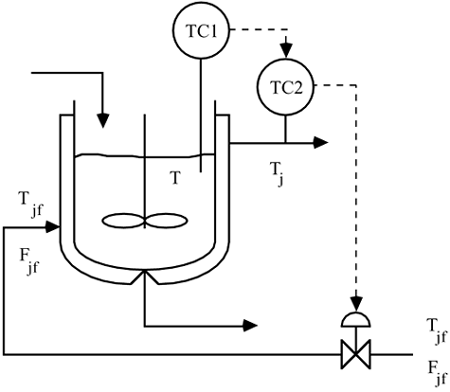 This is an interesting result. The model for a CSTR with a "once-through" jacket is the same as that for a recirculating jacket, assuming a static energy balance around the mixing point. This is one reason that it is common to see Figure M8-6 used to represent a CSTR when Figure M8-5 is the more common configuration in industry. It should be noted that the assumption of a constant heat-transfer coefficient is much better for Figure M8-5 than M8-6, since the jacket velocity will stay relatively constant for this system. Linear Open-Loop ResultsHere we again study the propylene glycol reactor presented in Section M8.3, with the following additional jacket parameters 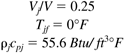 For the 100-ft3 reactor the state space model is (see Appendix M8.1 for the linearization results) 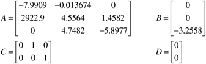 where x = [CA – CAs T – Ts Tj – Tjs]T, u = Fjf – Fjfs, y = [T – Ts Tj – Tjs]T You should be able to show (using MATLAB) that the process transfer function relating the jacket flow rate (u1) to the reactor temperature (y1) is 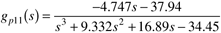 which has an unstable pole. Nonlinear Open-Loop ResultsThere is also multiple steady-state behavior as shown in Figure M8-7. This is an interesting result, because the 100-ft3 reactor was stable when the simplified model was used, and there was only one operating point. The simplified model essentially assumes perfect control of the jacket temperature. This means that the jacket temperature controller stabilizes the process. Figure M8-7. Steady-state input-output plot of reactor temperature as a function of jacket flow rate for the 100-ft3 reactor. The desired steady-state operating point is denoted by '+'.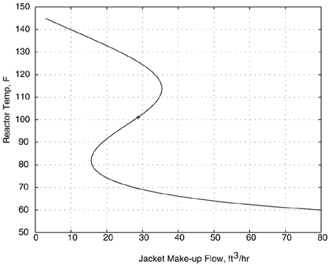 Linear Closed-Loop ResultsSince the CSTR is open-loop unstable, a feedback controller must be designed to stabilize the reactor operation. In the next problem, the Routh stability criterion is used to find the range of controller gains that stabilize the CSTR. Problem M8.5 A Stabilizing P-only Controller for the 100-ft3 Reactor Use the Routh stability criterion to determine the range of controller gains, for a P-only controller, that stabilize the reactor (based on the transfer function M8.14). Based on simulation results, what value of gain do you recommend for the P-only controller? Problem M8.6 Cascade Control of the 100-ft3 Reactor Develop a SIMULINK diagram of a cascade controller CSTR, where a state space representation [Equation (M8.12)] is used for the reactor. First, tune the secondary loop to stabilize the process. Then, tune the primary loop for the desired setpoint response behavior. |
| [ Team LiB ] |
|